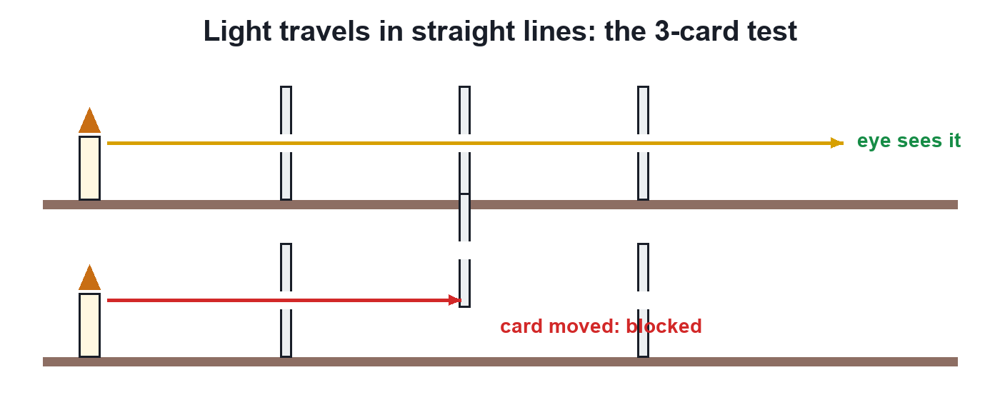
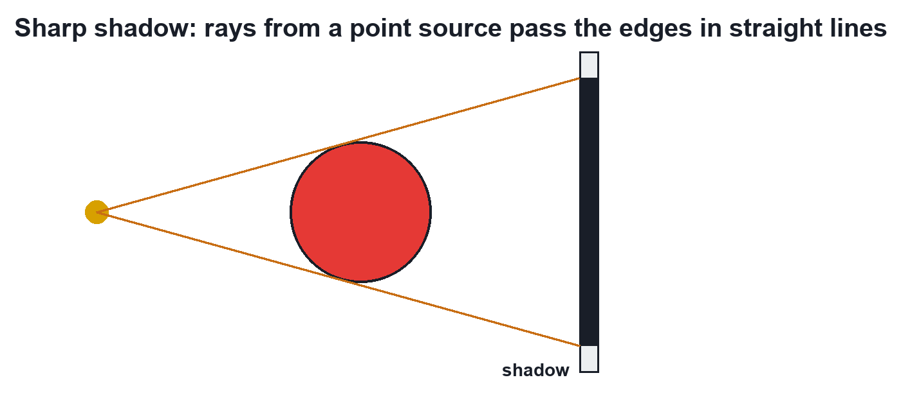

Chapter 9 · Physics
Light Travels in Straight Lines
Video not playing? Watch on Instagram · YouTube
You can hear a friend round a corner but not see them: sound bends, light travels in straight lines. We draw its path as a ray.
Download the short notesPDF, 113 KB · solved examples, practice set and answer key Up next in this chapter
 Reflection of LightThe Moon makes no light, yet it shines at night: sunlight bounces off it to our eyes. That bouncing back is reflection.Physics
Reflection of LightThe Moon makes no light, yet it shines at night: sunlight bounces off it to our eyes. That bouncing back is reflection.Physics
Key points
- In a uniform medium light travels in straight lines.
- Ray = path + direction (an arrow); beam = many rays.
- Sharp shadows and the 3-card test are the evidence.
- Sound (wavelength ~1 m) bends round corners; light (< 0.001 mm) practically does not.
The 3-card test

Sharp shadows

The ray model works for everyday sizes because light's wavelength is tiny; it is a model, not the whole story.
Quick quiz
4 questions. Choose an answer for each, then submit to see your score and the explanations.
More from Light – Reflection and Refraction
 Light: Chapter IntroductionWe see things because light bounces off them into our eyes. At a surface light has 2 options: bounce back (reflection) or go in and bend (refraction).Physics
Light: Chapter IntroductionWe see things because light bounces off them into our eyes. At a surface light has 2 options: bounce back (reflection) or go in and bend (refraction).Physics Laws of ReflectionTo hit a hidden target with a laser and a mirror you need 2 rules: i = r (both measured from the normal) and all three rays in one plane.Physics · simulation
Laws of ReflectionTo hit a hidden target with a laser and a mirror you need 2 rules: i = r (both measured from the normal) and all three rays in one plane.Physics · simulation